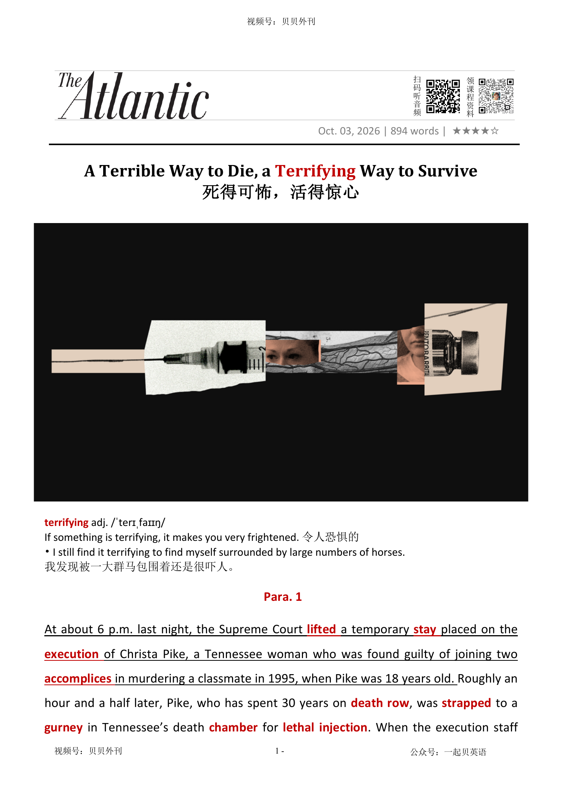

02 HEADLINE / 标题中英文解释
A Terrible Way to Die, a Terrifying Way to Survive
死得可怖，活得惊心
terrifying
令人恐惧的
If something is terrifying, it makes you very frightened.
A Terrible Way to Die, a Terrifying Way to Survive
死得可怖，活得惊心
令人恐惧的
If something is terrifying, it makes you very frightened.文章围绕田纳西州死囚 Christa Pike 注射死刑失败事件，质疑“致命注射”是否真的比枪决等方式更人道。
开头交代背景：美国最高法院解除暂缓令后，Pike 被绑在田纳西州死刑室的担架床上，接受戊巴比妥注射。
按程序，这种药物应让她迅速失去意识并死亡，但她在第一次注射后表现出极度痛苦，喘气、哭喊、身体扭动，甚至说自己“疼得要命”。
狱方关闭观察窗，又给了第二剂药物，但她仍未死亡，最终被送往医院，情况危急。
文章指出，这不是孤例，而是美国注射死刑长期失败模式的一部分。
中段解释技术和制度原因：合格医生通常拒绝参与处决，因为这违反希波克拉底誓言，导致监狱依赖训练不足的人员执行静脉穿刺。
若 IV 线路扎得不好，药物可能渗入组织而不是进入血液，造成类似被火烧的剧痛。
死囚自身的特殊生理状况、肥胖、疾病、血管问题，也会增加失败风险。
文章还指出药物来源本身有问题：正规药企不愿供应处决药物，州政府只能转向复方药房，药物可能过期、受污染、浓度不足。
后半部分把问题提升到制度层面：为了显得“医学化”和“文明”，致命注射把死刑包装成临床程序，但它并不真正安全或无痛。
随着更多囚犯在担架床上经历痛苦并在处决尝试中幸存，越来越多州开始重新审查死刑方式，有些甚至转向枪决或毒气。
结尾指出，田纳西州州长再次暂停处决并启动独立调查；文章的核心判断是，注射死刑这场所谓人道实验已经失败。
The article is about a failed lethal injection in Tennessee. Christa Pike had spent 30 years on death row.
After the Supreme Court lifted a temporary stay, she was taken to the execution chamber and given pentobarbital, a drug that was supposed to make her lose consciousness and die quickly. But the execution did not go as planned.
After the first injection, Pike was still awake and in extreme pain. She gasped, cried out and moved her body.
Prison officials closed the viewing window and later gave her a second dose, but she still did not die. She was taken to hospital in critical condition.
The article says this failure is part of a larger problem with lethal injection. Qualified doctors usually refuse to take part in executions because it goes against their medical ethics.
As a result, prisons often depend on poorly trained staff. If an IV line is placed badly, the drug may enter the tissue instead of the blood.
This can cause terrible burning pain and may fail to kill the prisoner. There are also problems with the drugs.
Many drug companies do not want their products used in executions, so states may get drugs from less reliable sources. Some drugs may be expired, contaminated or too weak.
This makes the process even more uncertain. The article argues that lethal injection only looks medical and humane.
In reality, it can cause great suffering. Some states have begun to review executions or consider other methods, such as firing squads or gas.
The main message is that the experiment with lethal injection has failed, and calling it humane does not make it painless or safe.
派克行刑失败事件（Para 1-4） ├─ 行刑现场：注射后剧痛，狱方反复遮挡观察窗 ├─ 现场恶化：呼吸困难、身体扭曲，行刑被迫中止 └─ 紧急处置：律师提交动议，囚犯送医抢救 注射死刑的普遍弊病（Para 5-6） ├─ 案例共性：行刑失败并非个案，多重根源长期存在 └─ 人员短板：合格医生拒绝参与，违背希波克拉底誓言 行刑失败的技术诱因（Para 7-8） ├─ 静脉问题：血管破裂，药物渗入组织造成灼烧感 └─ 药物隐患：药物过期、污染，药效不足引发剧痛 死刑执行体系困境（Para 9） ├─ 药源危机：药企拒供，只能依赖不合规药房 └─ 方案转向：部分州改用枪决、毒气等行刑方式 反思与结论（Para 10） ├─ 后续动作：州长暂停行刑，启动独立调查 └─ 核心论点：注射死刑本身存在根本缺陷，这场实验已经失败
At about 6 p.m. last night, the Supreme Court lifted解除 a temporary stay暂缓执行令 placed on the execution处决 of Christa Pike, a Tennessee woman who was found guilty of joining two accomplices同犯 in murdering a classmate in 1995, when Pike was 18 years old. Roughly an hour and a half later, Pike, who has spent 30 years on death row死囚区, was strapped用带子系好 to a gurney担架车 in Tennessee’s death chamber房间 for lethal injection注射死刑. When the execution staff began administering给予 the barbiturate pentobarbital戊巴比妥, the single drug the state uses in such executions, Pike turned to her spiritual精神的 adviser and mentioned a burning sensation感觉. Time passed, but Pike remained conscious and said that her arm felt like it was “about to burst open.” Perhaps aware that their attempt to kill Pike was not going as planned, prison officials closed the curtains on the witness observation window at 7:46 p.m., reopened them minutes later, then closed them for good永远地 at 8:05 p.m.
昨晚大约6点，美国最高法院解除了一项临时缓刑令，田纳西州女子克里斯塔·派克于1995年与两名同伙共同谋杀一名同学而被判有罪，案发时她年仅18岁。大约一个半小时后，这名已经在死囚牢房里度过30年的女子，被绑在田纳西州死刑执行室的一张移动病床上，准备接受注射死刑。执行人员开始注射戊巴比妥，这是田纳西州执行死刑所使用的唯一药物，派克转向自己的精神顾问，说自己感到一阵灼烧感。时间一点点流逝，但她始终保持清醒，并表示自己的手臂仿佛“快要胀裂开来”。或许是意识到这场处决并未按照计划进行，监狱官员于晚上7点46分拉上了观察窗前的帘幕；几分钟后又重新打开；到8点05分，他们再次将帘幕合上，而这一次，再未开启。
Given the odds可能性 of a botched搞砸的 procedure, subjecting prisoners to lethal injections can no longer be justified证明…有理 as reasonable. Pike’s story alone destroys the presumption假定 that lethal injections are a more humane善良的 and clinical alternative to the electric chair or gas chamber. And the method’s record is only getting worse with time.
鉴于这种程序失败的概率之高，如今再让囚犯承受注射死刑，已经难以被合理化。仅派克一案，就足以击碎一个长期存在的假设：注射死刑是一种比电椅或毒气室更人道、更“医疗化”的处决方式。而事实上，而这套行刑手段的实际记录，还在持续恶化。
Last night, after the prison staff closed the curtains for the first time and reopened them minutes later, Pike seemed to be breathing hard and in respiratory呼吸的 distress悲痛. As the minutes passed, her visible symptoms症状 worsened: Her body contorted扭曲, and she uttered出声 choking使人窒息的, grunting发出低沉短促声音的 sounds. Tennessee’s lethal-injection protocol医疗方案 allowed staff to administer a backup增援 dose一剂 of pentobarbital, but Pike continued to show signs of life, and the staff once again closed the curtain.
昨晚，在监狱人员第一次拉上帘幕后又重新打开时，派克似乎已经呼吸急促，出现明显的呼吸困难。随着时间推移，她可见的症状不断恶化：身体扭曲抽搐，喉间发出窒息般的闷哼声。根据田纳西州的注射死刑程序规定，工作人员可以追加一剂备用的戊巴比妥。然而即便如此，派克依然表现出生命迹象，于是工作人员再次拉上了帘幕。
Yet witnesses could hear Pike’s ragged衣衫褴褛的 breathing via the audio feed网络供给节目 from the execution chamber. Because Tennessee law permits no more than two doses of pentobarbital, her lawyers scrambled仓促行动 to file emergency motions arguing that efforts to kill her must cease so that she could get medical attention. The execution formally concluded just before 9 p.m., and Pike was transferred to an off-site所在地之外的 hospital for treatment.
尽管如此，旁观者仍能通过执行室的音频系统听到她断断续续的呼吸声。由于田纳西州法律规定最多只能使用两剂戊巴比妥，她的律师团队争分夺秒地提交紧急动议，主张停止继续处决，以便让她获得医疗救治。直到晚上9点前，这场处决才被正式宣告结束，随后派克被转送至监狱外的一家医院接受治疗。
Pike’s story is harrowing折磨人的 but not unique. In a recent paper “Why Are Executions Becoming Crueler?,” a law professor writes that recent cases of botched injections “failed for all the same reasons they have faltered衰退 since this country’s first lethal injection execution four decades ago: executioner incompetence无能力, inappropriate use of torturous折磨人的 drugs, and defects缺陷 in lethal injection protocols, among a host of许多 other factors.”
派克的经历令人毛骨悚然，但绝非孤例。在最近一篇题为《为什么处决正变得越来越残酷？》的论文中，一位法学教授指出，近年来那些失败的注射死刑案例，“之所以失败，原因与四十多年前美国首次采用注射死刑时如出一辙：执行人员能力不足、折磨性的药物的不当使用、注射程序本身存在缺陷，以及诸多其他因素。”
Qualified medical personnel generally do not want to be involved with lethal injections. This is in part because major medical institutions机构, such as the American Medical Association, explicitly bar禁止 participation in executions, which violates违反 the Hippocratic oath希波克拉底誓言 to do no harm. Playing a role in state-sanctioned政府批准的 murder has grown still harder to justify as heinous极恶毒的 examples of botched executions accrue增长. Although the identities of executioners are concealed隐藏 by state secrecy laws, the potential for discovery is presumably很可能 unwelcome to anyone tasked with healing. The absence of skilled medical personnel has contributed to dire极其严重的 mishaps小事故 in several states.
合格的医疗人员通常不愿参与注射死刑。这部分是因为美国医学会等主要医疗机构明确禁止医生参与处决活动，因为这违背了“不伤害”的希波克拉底誓言。随着越来越多令人发指的失败处决案例不断累积，为国家认可的杀戮行为提供协助，也变得愈发难以自圆其说。尽管执行人员的身份受到各州保密法律的保护，但对于任何肩负救死扶伤职责的人而言，身份暴露的可能性显然都令人避之不及。而正是这种专业医疗人员的缺位，导致多个州接连发生严重的执行事故。
The absence of experienced and qualified medical staff means that lethal-injection attempts frequently fail to establish access to prisoners’ veins静脉. This appears to have happened in Pike’s case, based on her complaints at the time. When IV lines are set poorly, because of either a prisoner’s unique physiology生理机能 (Pike, for instance, has thrombocytosis血小板增多症, a platelet血小板 disorder失调 that causes increased blood clotting凝结成块) or simple incompetence, prisoners’ veins can rupture断裂, spilling blood and poison into the surrounding tissue组织, which can cause the burning Pike described.
缺乏经验丰富、资质合格的医护人员，意味着注射死刑常常连静脉通路都无法顺利建立。从派克当时的抱怨来看，她的遭遇很可能正是如此。当静脉注射管放置不当时，无论是由于囚犯特殊的生理条件，还是执行人员技术不过关，静脉都有可能破裂。派克本人患有血小板增多症，这是一种导致血液更容易凝结的疾病。当静脉破裂后，血液与毒性药物会渗入周围组织，从而引发她所描述的那种剧烈灼烧感。
Pike’s veins may have been so compromised受损的 that very little pentobarbital may have made it into her bloodstream体内循环的血液. Another equally plausible有道理的 reason why the execution failed is that the drug was expired or contaminated污染, a problem that has plagued给…造成长时间的痛苦 other states. Texas, for instance, has long extended the use-by使用期限的 dates on its stock of pentobarbital, and has carried out executions with expired drugs. As recently as 2022, Tennessee had failed to properly test its lethal-injection drugs for the presence of bacterial细菌的 endotoxins内毒素, which can trigger severe physiological distress. Expiration and contamination can both negatively affect executions, either by creating intolerable pain at injection sites or by prompting multiple injections because of decreased potency影响力.
派克的静脉或许已经严重受损，以至于真正进入血液循环的戊巴比妥极其有限。另一种同样合理的解释则是：药物本身已经过期或受到污染，而这类问题此前也曾困扰过其他州。例如，得克萨斯州长期延长库存戊巴比妥的使用期限，并曾使用过期药物执行死刑。就在2022年，田纳西州还被发现未能按照规定检测注射药物中的细菌内毒素含量，而这种物质可能引发严重的生理痛苦。药物过期和污染都会对处决产生不利影响：一则导致注射部位出现难以忍受的疼痛，也会因药效下降而不得不反复注射。
And because pharmaceutical制药的 manufacturers have largely sought to prevent the use of their products in executions, states often solicit索求 the drugs from poorly regulated约束 compounding配制的 pharmacies that may supply flawed有错误的 alternatives. This has made lethal drugs for executions ever more hard to get, and extant尚存的 stockpiles囤聚的物资 have grown old. Some states have begun turning to gas executions and firing squads to keep their capital punishment死刑 regimes grinding along, a tacit心照不宣的 admission that lethal injection is becoming untenable难以捍卫的.
与此同时，由于制药企业近年来普遍试图阻止自己的产品被用于死刑执行，各州政府不得不转向监管较为宽松的配制药房采购药物，而这些机构提供的替代品本身也可能存在质量问题。结果是，用于执行死刑的药物越来越难获得，现有库存则日益老化。为了维持死刑制度的运转，一些州已经开始重新启用毒气处决和行刑队等方式。这实际上是一种心照不宣的承认：注射死刑正变得越来越难以为继。
Pike is reportedly in critical condition. Tennessee Governor Bill Lee has once more halted停止 executions for the foreseeable可预料的 future while an independent review of what went wrong takes place. As more prisoners experience agony极度痛苦 on gurneys and survive their execution attempts, more states can be expected to similarly examine the safety of their capital-punishment protocols. But these third-party investigators will not discover a reliably swift and painless method of administering lethal injections, because the method itself is flawed. States must let go of放开 the faulty不完美的 premise前提 that killing people via intravenous静脉内的 poisoning is somehow more humane than more obviously grisly令人厌恶的 methods such as hanging and electrocution触电死亡. America’s experiment with lethal injection has failed.
据报道，派克目前情况危急。田纳西州州长比尔·李再次暂停了该州未来一段时间内的所有死刑执行，以等待独立调查查明此次事故的原因。随着越来越多囚犯在移动病床上承受极度痛苦，却最终从处决中生还，其他州很可能也会重新审视自身死刑程序的安全性。然而，这些第三方调查都不可能找到一种既可靠、又迅速、同时毫无痛苦的注射死刑方式，因为有问题的是这种方法本身。各州必须放弃这样一个错误的前提：通过静脉注射毒药夺取一个人生命的方式更“人道”，比起绞刑或电刑这些更可怖的方式而言。美国关于注射死刑的这场实验，已经失败了。
令人恐惧的
If something is terrifying, it makes you very frightened.
I still find it terrifying to find myself surrounded by large numbers of horses. 我发现被一大群马包围着还是很吓人。
解除，撤销，停止（限制）
to remove or end restrictions
to lift a ban/curfew/blockade 解除禁令╱宵禁╱封锁
last night, the Supreme Court lifted a temporary stay placed on the execution of Christa Pike, a Tennessee woman who was found guilty of joining two accomplices in murdering a classmate in 1995, when Pike was 18 years old.
昨晚大约6点，美国最高法院解除了一项临时缓刑令，田纳西州女子克里斯塔·派克于1995年与两名同伙共同谋杀一名同学而被判有罪，案发时她年仅18岁。大约一个半小时后，这名已经在死囚牢房里度过30年的女子，被绑在田纳西州死刑执行室的一张移动病床上，准备接受注射死刑。执行人员开始注射戊巴比妥，这是田纳西州执行死刑所使用的唯一药物，派克转向自己的精神顾问，说自己感到一阵灼烧感。时间一点点流逝，但她始终保持清醒，并表示自己的手臂仿佛“快要胀裂开来”…
（法律上的）暂缓执行令；延期执行令；中止令
a legal order that temporarily stops or delays a judicial action or decision
The court granted a stay on the execution. 法院批准了暂缓执行令。
last night, the Supreme Court lifted a temporary stay placed on the execution of Christa Pike, a Tennessee woman who was found guilty of joining two accomplices in murdering a classmate in 1995, when Pike was 18 years old.
昨晚大约6点，美国最高法院解除了一项临时缓刑令，田纳西州女子克里斯塔·派克于1995年与两名同伙共同谋杀一名同学而被判有罪，案发时她年仅18岁。大约一个半小时后，这名已经在死囚牢房里度过30年的女子，被绑在田纳西州死刑执行室的一张移动病床上，准备接受注射死刑。执行人员开始注射戊巴比妥，这是田纳西州执行死刑所使用的唯一药物，派克转向自己的精神顾问，说自己感到一阵灼烧感。时间一点点流逝，但她始终保持清醒，并表示自己的手臂仿佛“快要胀裂开来”…
处决
the act of killing sb, especially as a legal punishment
He faced execution by hanging for murder.他因谋杀要以绞刑处死。
last night, the Supreme Court lifted a temporary stay placed on the execution of Christa Pike, a Tennessee woman who was found guilty of joining two accomplices in murdering a classmate in 1995, when Pike was 18 years old.
昨晚大约6点，美国最高法院解除了一项临时缓刑令，田纳西州女子克里斯塔·派克于1995年与两名同伙共同谋杀一名同学而被判有罪，案发时她年仅18岁。大约一个半小时后，这名已经在死囚牢房里度过30年的女子，被绑在田纳西州死刑执行室的一张移动病床上，准备接受注射死刑。执行人员开始注射戊巴比妥，这是田纳西州执行死刑所使用的唯一药物，派克转向自己的精神顾问，说自己感到一阵灼烧感。时间一点点流逝，但她始终保持清醒，并表示自己的手臂仿佛“快要胀裂开来”…
同犯
Someone's accomplice is a person who helps them to commit a crime.
Witnesses said the gunman immediately ran to a motorcycle being ridden by an accomplice. 证人们说该枪手立即向由一名同犯驾驶的摩托车跑去。
last night, the Supreme Court lifted a temporary stay placed on the execution of Christa Pike, a Tennessee woman who was found guilty of joining two accomplices in murdering a classmate in 1995, when Pike was 18 years old.
昨晚大约6点，美国最高法院解除了一项临时缓刑令，田纳西州女子克里斯塔·派克于1995年与两名同伙共同谋杀一名同学而被判有罪，案发时她年仅18岁。大约一个半小时后，这名已经在死囚牢房里度过30年的女子，被绑在田纳西州死刑执行室的一张移动病床上，准备接受注射死刑。执行人员开始注射戊巴比妥，这是田纳西州执行死刑所使用的唯一药物，派克转向自己的精神顾问，说自己感到一阵灼烧感。时间一点点流逝，但她始终保持清醒，并表示自己的手臂仿佛“快要胀裂开来”…
死囚区
If someone is on death row, they are in the part of a prison which contains the cells for criminals who have been sentenced to death.
He has been on death row for 11 years. 他在死囚区已经11年了。
Roughly an hour and a half later, Pike, who has spent 30 years on death row, was strapped to a gurney in Tennessee’s death chamber for lethal injection.
昨晚大约6点，美国最高法院解除了一项临时缓刑令，田纳西州女子克里斯塔·派克于1995年与两名同伙共同谋杀一名同学而被判有罪，案发时她年仅18岁。大约一个半小时后，这名已经在死囚牢房里度过30年的女子，被绑在田纳西州死刑执行室的一张移动病床上，准备接受注射死刑。执行人员开始注射戊巴比妥，这是田纳西州执行死刑所使用的唯一药物，派克转向自己的精神顾问，说自己感到一阵灼烧感。时间一点点流逝，但她始终保持清醒，并表示自己的手臂仿佛“快要胀裂开来”…
用带子系（或捆、扎、扣）好
to fasten sb/sth in place using a strap or straps
He strapped the knife to his leg.他把刀绑到腿上。
Roughly an hour and a half later, Pike, who has spent 30 years on death row, was strapped to a gurney in Tennessee’s death chamber for lethal injection.
昨晚大约6点，美国最高法院解除了一项临时缓刑令，田纳西州女子克里斯塔·派克于1995年与两名同伙共同谋杀一名同学而被判有罪，案发时她年仅18岁。大约一个半小时后，这名已经在死囚牢房里度过30年的女子，被绑在田纳西州死刑执行室的一张移动病床上，准备接受注射死刑。执行人员开始注射戊巴比妥，这是田纳西州执行死刑所使用的唯一药物，派克转向自己的精神顾问，说自己感到一阵灼烧感。时间一点点流逝，但她始终保持清醒，并表示自己的手臂仿佛“快要胀裂开来”…
担架车；病床推车
a wheeled stretcher used for transporting patients in hospitals
The patient was taken into the operating room on a gurney. 病人被担架车推进了手术室。
Roughly an hour and a half later, Pike, who has spent 30 years on death row, was strapped to a gurney in Tennessee’s death chamber for lethal injection.
昨晚大约6点，美国最高法院解除了一项临时缓刑令，田纳西州女子克里斯塔·派克于1995年与两名同伙共同谋杀一名同学而被判有罪，案发时她年仅18岁。大约一个半小时后，这名已经在死囚牢房里度过30年的女子，被绑在田纳西州死刑执行室的一张移动病床上，准备接受注射死刑。执行人员开始注射戊巴比妥，这是田纳西州执行死刑所使用的唯一药物，派克转向自己的精神顾问，说自己感到一阵灼烧感。时间一点点流逝，但她始终保持清醒，并表示自己的手臂仿佛“快要胀裂开来”…
(作特殊用途的) 房间
A chamber is a room designed and equipped for a particular purpose.
For many, the dentist's office remains a torture chamber. 对许多人来说，牙科诊室仍是一间行刑室。
Roughly an hour and a half later, Pike, who has spent 30 years on death row, was strapped to a gurney in Tennessee’s death chamber for lethal injection.
昨晚大约6点，美国最高法院解除了一项临时缓刑令，田纳西州女子克里斯塔·派克于1995年与两名同伙共同谋杀一名同学而被判有罪，案发时她年仅18岁。大约一个半小时后，这名已经在死囚牢房里度过30年的女子，被绑在田纳西州死刑执行室的一张移动病床上，准备接受注射死刑。执行人员开始注射戊巴比妥，这是田纳西州执行死刑所使用的唯一药物，派克转向自己的精神顾问，说自己感到一阵灼烧感。时间一点点流逝，但她始终保持清醒，并表示自己的手臂仿佛“快要胀裂开来”…
注射死刑
a method of execution in which a person is put to death by the injection of drugs
The state carried out the execution by lethal injection. 该州通过注射死刑执行了死刑判决。
Roughly an hour and a half later, Pike, who has spent 30 years on death row, was strapped to a gurney in Tennessee’s death chamber for lethal injection.
昨晚大约6点，美国最高法院解除了一项临时缓刑令，田纳西州女子克里斯塔·派克于1995年与两名同伙共同谋杀一名同学而被判有罪，案发时她年仅18岁。大约一个半小时后，这名已经在死囚牢房里度过30年的女子，被绑在田纳西州死刑执行室的一张移动病床上，准备接受注射死刑。执行人员开始注射戊巴比妥，这是田纳西州执行死刑所使用的唯一药物，派克转向自己的精神顾问，说自己感到一阵灼烧感。时间一点点流逝，但她始终保持清醒，并表示自己的手臂仿佛“快要胀裂开来”…
给予，施用（药物等）
to give drugs, medicine, etc. to sb
The dose was administered to the child intravenously.已给那孩子静脉注射了这一剂量。
When the execution staff began administering the barbiturate pentobarbital, the single drug the state uses in such executions, Pike turned to her spiritual adviser and mentioned a burning sensation.
昨晚大约6点，美国最高法院解除了一项临时缓刑令，田纳西州女子克里斯塔·派克于1995年与两名同伙共同谋杀一名同学而被判有罪，案发时她年仅18岁。大约一个半小时后，这名已经在死囚牢房里度过30年的女子，被绑在田纳西州死刑执行室的一张移动病床上，准备接受注射死刑。执行人员开始注射戊巴比妥，这是田纳西州执行死刑所使用的唯一药物，派克转向自己的精神顾问，说自己感到一阵灼烧感。时间一点点流逝，但她始终保持清醒，并表示自己的手臂仿佛“快要胀裂开来”…
戊巴比妥（一种巴比妥类药物，用于镇静、麻醉和抗惊厥）
a barbiturate drug used as a sedative, anesthetic, and anticonvulsant
Pentobarbital is commonly used in veterinary medicine and some medical procedures. 戊巴比妥常用于兽医学和某些医疗程序。
When the execution staff began administering the barbiturate pentobarbital, the single drug the state uses in such executions, Pike turned to her spiritual adviser and mentioned a burning sensation.
昨晚大约6点，美国最高法院解除了一项临时缓刑令，田纳西州女子克里斯塔·派克于1995年与两名同伙共同谋杀一名同学而被判有罪，案发时她年仅18岁。大约一个半小时后，这名已经在死囚牢房里度过30年的女子，被绑在田纳西州死刑执行室的一张移动病床上，准备接受注射死刑。执行人员开始注射戊巴比妥，这是田纳西州执行死刑所使用的唯一药物，派克转向自己的精神顾问，说自己感到一阵灼烧感。时间一点点流逝，但她始终保持清醒，并表示自己的手臂仿佛“快要胀裂开来”…
精神的；心灵的
connected with the human spirit, rather than the body or physical things
a spiritual experience心灵体验
When the execution staff began administering the barbiturate pentobarbital, the single drug the state uses in such executions, Pike turned to her spiritual adviser and mentioned a burning sensation.
昨晚大约6点，美国最高法院解除了一项临时缓刑令，田纳西州女子克里斯塔·派克于1995年与两名同伙共同谋杀一名同学而被判有罪，案发时她年仅18岁。大约一个半小时后，这名已经在死囚牢房里度过30年的女子，被绑在田纳西州死刑执行室的一张移动病床上，准备接受注射死刑。执行人员开始注射戊巴比妥，这是田纳西州执行死刑所使用的唯一药物，派克转向自己的精神顾问，说自己感到一阵灼烧感。时间一点点流逝，但她始终保持清醒，并表示自己的手臂仿佛“快要胀裂开来”…
感觉；知觉
a feeling that you get when sth affects your body
a tingling/burning, etc. sensation 刺痛、烧灼等的感觉
When the execution staff began administering the barbiturate pentobarbital, the single drug the state uses in such executions, Pike turned to her spiritual adviser and mentioned a burning sensation.
昨晚大约6点，美国最高法院解除了一项临时缓刑令，田纳西州女子克里斯塔·派克于1995年与两名同伙共同谋杀一名同学而被判有罪，案发时她年仅18岁。大约一个半小时后，这名已经在死囚牢房里度过30年的女子，被绑在田纳西州死刑执行室的一张移动病床上，准备接受注射死刑。执行人员开始注射戊巴比妥，这是田纳西州执行死刑所使用的唯一药物，派克转向自己的精神顾问，说自己感到一阵灼烧感。时间一点点流逝，但她始终保持清醒，并表示自己的手臂仿佛“快要胀裂开来”…
永远地；永久地
permanently; forever
He left the company for good after twenty years. 他在公司工作二十年后永久离开了。
Perhaps aware that their attempt to kill Pike was not going as planned, prison officials closed the curtains on the witness observation window at 7:46 p.m., reopened them minutes later, then closed them for good at 8:05 p.m.
昨晚大约6点，美国最高法院解除了一项临时缓刑令，田纳西州女子克里斯塔·派克于1995年与两名同伙共同谋杀一名同学而被判有罪，案发时她年仅18岁。大约一个半小时后，这名已经在死囚牢房里度过30年的女子，被绑在田纳西州死刑执行室的一张移动病床上，准备接受注射死刑。执行人员开始注射戊巴比妥，这是田纳西州执行死刑所使用的唯一药物，派克转向自己的精神顾问，说自己感到一阵灼烧感。时间一点点流逝，但她始终保持清醒，并表示自己的手臂仿佛“快要胀裂开来”…
（事物发生的）可能性，概率，几率，机会
the degree to which sth is likely to happen
The odds are very much in our favour (= we are likely to succeed) .我方胜算的几率极大。
Given the odds of a botched procedure, subjecting prisoners to lethal injections can no longer be justified as reasonable.
鉴于这种程序失败的概率之高，如今再让囚犯承受注射死刑，已经难以被合理化。仅派克一案，就足以击碎一个长期存在的假设：注射死刑是一种比电椅或毒气室更人道、更“医疗化”的处决方式。而事实上，而这套行刑手段的实际记录，还在持续恶化。
搞砸的；拙劣的；失败的
done badly or unsuccessfully, especially because of carelessness or lack of skill
The execution was botched because the equipment malfunctioned. 由于设备出现故障，这次死刑执行失败了。
Given the odds of a botched procedure, subjecting prisoners to lethal injections can no longer be justified as reasonable.
鉴于这种程序失败的概率之高，如今再让囚犯承受注射死刑，已经难以被合理化。仅派克一案，就足以击碎一个长期存在的假设：注射死刑是一种比电椅或毒气室更人道、更“医疗化”的处决方式。而事实上，而这套行刑手段的实际记录，还在持续恶化。
证明…有理
To justify a decision, action, or idea means to show or prove that it is reasonable or necessary.
No argument can justify a war. 没有任何理由能证明一个战争有理。
Given the odds of a botched procedure, subjecting prisoners to lethal injections can no longer be justified as reasonable.
鉴于这种程序失败的概率之高，如今再让囚犯承受注射死刑，已经难以被合理化。仅派克一案，就足以击碎一个长期存在的假设：注射死刑是一种比电椅或毒气室更人道、更“医疗化”的处决方式。而事实上，而这套行刑手段的实际记录，还在持续恶化。
假定
A presumption is something that is accepted as true but is not certain to be true.
...the presumption that a defendant is innocent until proved guilty. …在被证明有罪之前被告为无罪的假定。
Pike’s story alone destroys the presumption that lethal injections are a more humane and clinical alternative to the electric chair or gas chamber.
鉴于这种程序失败的概率之高，如今再让囚犯承受注射死刑，已经难以被合理化。仅派克一案，就足以击碎一个长期存在的假设：注射死刑是一种比电椅或毒气室更人道、更“医疗化”的处决方式。而事实上，而这套行刑手段的实际记录，还在持续恶化。
善良的；仁慈的；人道的
showing kindness towards people and animals by making sure that they do not suffer more than is necessary
a caring and humane society充满关怀和人道的社会
Pike’s story alone destroys the presumption that lethal injections are a more humane and clinical alternative to the electric chair or gas chamber.
鉴于这种程序失败的概率之高，如今再让囚犯承受注射死刑，已经难以被合理化。仅派克一案，就足以击碎一个长期存在的假设：注射死刑是一种比电椅或毒气室更人道、更“医疗化”的处决方式。而事实上，而这套行刑手段的实际记录，还在持续恶化。
呼吸的
Respiratory means relating to breathing.
...people with severe respiratory problems. …有严重呼吸问题的人们。
Last night, after the prison staff closed the curtains for the first time and reopened them minutes later, Pike seemed to be breathing hard and in respiratory distress.
昨晚，在监狱人员第一次拉上帘幕后又重新打开时，派克似乎已经呼吸急促，出现明显的呼吸困难。随着时间推移，她可见的症状不断恶化：身体扭曲抽搐，喉间发出窒息般的闷哼声。根据田纳西州的注射死刑程序规定，工作人员可以追加一剂备用的戊巴比妥。然而即便如此，派克依然表现出生命迹象，于是工作人员再次拉上了帘幕。
悲痛; 疼痛
Distress is a state of extreme sorrow, suffering, or pain.
Jealousy causes distress and painful emotions. 嫉妒会引发悲伤和痛苦的情绪。
Last night, after the prison staff closed the curtains for the first time and reopened them minutes later, Pike seemed to be breathing hard and in respiratory distress.
昨晚，在监狱人员第一次拉上帘幕后又重新打开时，派克似乎已经呼吸急促，出现明显的呼吸困难。随着时间推移，她可见的症状不断恶化：身体扭曲抽搐，喉间发出窒息般的闷哼声。根据田纳西州的注射死刑程序规定，工作人员可以追加一剂备用的戊巴比妥。然而即便如此，派克依然表现出生命迹象，于是工作人员再次拉上了帘幕。
症状
A symptom of an illness is something wrong with your body or mind that is a sign of the illness.
flu symptoms 流感症状
As the minutes passed, her visible symptoms worsened: Her body contorted, and she uttered choking, grunting sounds.
昨晚，在监狱人员第一次拉上帘幕后又重新打开时，派克似乎已经呼吸急促，出现明显的呼吸困难。随着时间推移，她可见的症状不断恶化：身体扭曲抽搐，喉间发出窒息般的闷哼声。根据田纳西州的注射死刑程序规定，工作人员可以追加一剂备用的戊巴比妥。然而即便如此，派克依然表现出生命迹象，于是工作人员再次拉上了帘幕。
（使）扭曲，走样
to become twisted or make sth twisted out of its natural or normal shape
His face contorted with anger.他脸都气歪了。
As the minutes passed, her visible symptoms worsened: Her body contorted, and she uttered choking, grunting sounds.
昨晚，在监狱人员第一次拉上帘幕后又重新打开时，派克似乎已经呼吸急促，出现明显的呼吸困难。随着时间推移，她可见的症状不断恶化：身体扭曲抽搐，喉间发出窒息般的闷哼声。根据田纳西州的注射死刑程序规定，工作人员可以追加一剂备用的戊巴比妥。然而即便如此，派克依然表现出生命迹象，于是工作人员再次拉上了帘幕。
出声；说；讲
to make a sound with your voice; to say sth
to utter a cry发出喊叫声
As the minutes passed, her visible symptoms worsened: Her body contorted, and she uttered choking, grunting sounds.
昨晚，在监狱人员第一次拉上帘幕后又重新打开时，派克似乎已经呼吸急促，出现明显的呼吸困难。随着时间推移，她可见的症状不断恶化：身体扭曲抽搐，喉间发出窒息般的闷哼声。根据田纳西州的注射死刑程序规定，工作人员可以追加一剂备用的戊巴比妥。然而即便如此，派克依然表现出生命迹象，于是工作人员再次拉上了帘幕。
使人窒息的；导致呼吸困难的
causing someone to have difficulty breathing because the throat or airway is blocked
The choking sensation made it difficult for him to breathe. 窒息感让他难以呼吸。
As the minutes passed, her visible symptoms worsened: Her body contorted, and she uttered choking, grunting sounds.
昨晚，在监狱人员第一次拉上帘幕后又重新打开时，派克似乎已经呼吸急促，出现明显的呼吸困难。随着时间推移，她可见的症状不断恶化：身体扭曲抽搐，喉间发出窒息般的闷哼声。根据田纳西州的注射死刑程序规定，工作人员可以追加一剂备用的戊巴比妥。然而即便如此，派克依然表现出生命迹象，于是工作人员再次拉上了帘幕。
发出低沉短促声音的；发出呻吟声的
making short, low sounds expressing pain, effort, or discomfort
Witnesses heard grunting sounds coming from the execution chamber. 目击者听到死刑执行室里传来低沉的呻吟声。
As the minutes passed, her visible symptoms worsened: Her body contorted, and she uttered choking, grunting sounds.
昨晚，在监狱人员第一次拉上帘幕后又重新打开时，派克似乎已经呼吸急促，出现明显的呼吸困难。随着时间推移，她可见的症状不断恶化：身体扭曲抽搐，喉间发出窒息般的闷哼声。根据田纳西州的注射死刑程序规定，工作人员可以追加一剂备用的戊巴比妥。然而即便如此，派克依然表现出生命迹象，于是工作人员再次拉上了帘幕。
医疗方案; 科学试验计划
A protocol is a plan for a course of medical treatment, or a plan for a scientific experiment.
...the detoxification protocol. …戒毒方案。
Tennessee’s lethal-injection protocol allowed staff to administer a backup dose of pentobarbital, but Pike continued to show signs of life, and the staff once again closed the curtain.
昨晚，在监狱人员第一次拉上帘幕后又重新打开时，派克似乎已经呼吸急促，出现明显的呼吸困难。随着时间推移，她可见的症状不断恶化：身体扭曲抽搐，喉间发出窒息般的闷哼声。根据田纳西州的注射死刑程序规定，工作人员可以追加一剂备用的戊巴比妥。然而即便如此，派克依然表现出生命迹象，于是工作人员再次拉上了帘幕。
增援；后援
extra help or support that you can get if necessary
The police had backup from the army.警方得到了军方的增援。
Tennessee’s lethal-injection protocol allowed staff to administer a backup dose of pentobarbital, but Pike continued to show signs of life, and the staff once again closed the curtain.
昨晚，在监狱人员第一次拉上帘幕后又重新打开时，派克似乎已经呼吸急促，出现明显的呼吸困难。随着时间推移，她可见的症状不断恶化：身体扭曲抽搐，喉间发出窒息般的闷哼声。根据田纳西州的注射死刑程序规定，工作人员可以追加一剂备用的戊巴比妥。然而即便如此，派克依然表现出生命迹象，于是工作人员再次拉上了帘幕。
（药的）一剂，一服
an amount of a medicine or a drug that is taken once, or regularly over a period of time
a high/low/lethal dose 大╱小╱致死剂量
Tennessee’s lethal-injection protocol allowed staff to administer a backup dose of pentobarbital, but Pike continued to show signs of life, and the staff once again closed the curtain.
昨晚，在监狱人员第一次拉上帘幕后又重新打开时，派克似乎已经呼吸急促，出现明显的呼吸困难。随着时间推移，她可见的症状不断恶化：身体扭曲抽搐，喉间发出窒息般的闷哼声。根据田纳西州的注射死刑程序规定，工作人员可以追加一剂备用的戊巴比妥。然而即便如此，派克依然表现出生命迹象，于是工作人员再次拉上了帘幕。
衣衫褴褛的；破衣烂衫的
1. wearing old or torn clothes
ragged children衣衫褴褛的孩子们 2. not smooth or controlled不流畅的；不受控制的
Yet witnesses could hear Pike’s ragged breathing via the audio feed from the execution chamber.
尽管如此，旁观者仍能通过执行室的音频系统听到她断断续续的呼吸声。由于田纳西州法律规定最多只能使用两剂戊巴比妥，她的律师团队争分夺秒地提交紧急动议，主张停止继续处决，以便让她获得医疗救治。直到晚上9点前，这场处决才被正式宣告结束，随后派克被转送至监狱外的一家医院接受治疗。
（电视中心台）网络供给节目（系统）
television programmes that are sent from a central station to other stations in a network; the system of sending out these programmes
network feed网络供给节目系统
Yet witnesses could hear Pike’s ragged breathing via the audio feed from the execution chamber.
尽管如此，旁观者仍能通过执行室的音频系统听到她断断续续的呼吸声。由于田纳西州法律规定最多只能使用两剂戊巴比妥，她的律师团队争分夺秒地提交紧急动议，主张停止继续处决，以便让她获得医疗救治。直到晚上9点前，这场处决才被正式宣告结束，随后派克被转送至监狱外的一家医院接受治疗。
仓促行动
If you scramble to a different place or position, you move there in a hurried, awkward way.
Ann threw back the covers and scrambled out of bed.
Because Tennessee law permits no more than two doses of pentobarbital, her lawyers scrambled to file emergency motions arguing that efforts to kill her must cease so that she could get medical attention.
尽管如此，旁观者仍能通过执行室的音频系统听到她断断续续的呼吸声。由于田纳西州法律规定最多只能使用两剂戊巴比妥，她的律师团队争分夺秒地提交紧急动议，主张停止继续处决，以便让她获得医疗救治。直到晚上9点前，这场处决才被正式宣告结束，随后派克被转送至监狱外的一家医院接受治疗。
紧急动议；紧急申请
a formal request asking a court to make an immediate decision because of an urgent situation
The lawyers filed an emergency motion to halt the execution. 律师提交了一份紧急动议，请求暂缓执行死刑。
所在地之外的；场外的；异地的
located away from the main place or facility, especially away from a workplace or organization
The equipment is stored at an off-site facility. 这些设备存放在场外的设施中。
The execution formally concluded just before 9 p.m., and Pike was transferred to an off-site hospital for treatment.
尽管如此，旁观者仍能通过执行室的音频系统听到她断断续续的呼吸声。由于田纳西州法律规定最多只能使用两剂戊巴比妥，她的律师团队争分夺秒地提交紧急动议，主张停止继续处决，以便让她获得医疗救治。直到晚上9点前，这场处决才被正式宣告结束，随后派克被转送至监狱外的一家医院接受治疗。
折磨人的
A harrowing experience is extremely upsetting or disturbing.
You've had a harrowing time this past month. 在这过去的一个月里，你已经历了一段痛苦的日子。
Pike’s story is harrowing but not unique.
派克的经历令人毛骨悚然，但绝非孤例。在最近一篇题为《为什么处决正变得越来越残酷？》的论文中，一位法学教授指出，近年来那些失败的注射死刑案例，“之所以失败，原因与四十多年前美国首次采用注射死刑时如出一辙：执行人员能力不足、折磨性的药物的不当使用、注射程序本身存在缺陷，以及诸多其他因素。”
衰退
If something falters, it loses power or strength in an uneven way, or no longer makes much progress.
Normal life is at a standstill, and the economy is faltering. 正常生活陷入停滞，经济正在衰退。
In a recent paper “Why Are Executions Becoming Crueler?,” a law professor writes that recent cases of botched injections “failed for all the same reasons they have faltered since this country’s first lethal injection execution four decades ago: executioner inc…
派克的经历令人毛骨悚然，但绝非孤例。在最近一篇题为《为什么处决正变得越来越残酷？》的论文中，一位法学教授指出，近年来那些失败的注射死刑案例，“之所以失败，原因与四十多年前美国首次采用注射死刑时如出一辙：执行人员能力不足、折磨性的药物的不当使用、注射程序本身存在缺陷，以及诸多其他因素。”
无能力；不胜任；不称职
the lack of skill or ability to do your job or a task as it should be done
professional incompetence专业方面不称职
In a recent paper “Why Are Executions Becoming Crueler?,” a law professor writes that recent cases of botched injections “failed for all the same reasons they have faltered since this country’s first lethal injection execution four decades ago: executioner inc…
派克的经历令人毛骨悚然，但绝非孤例。在最近一篇题为《为什么处决正变得越来越残酷？》的论文中，一位法学教授指出，近年来那些失败的注射死刑案例，“之所以失败，原因与四十多年前美国首次采用注射死刑时如出一辙：执行人员能力不足、折磨性的药物的不当使用、注射程序本身存在缺陷，以及诸多其他因素。”
折磨人的
Something that is torturous is extremely painful and causes great suffering.
This is a torturous, agonizing way to kill someone. 这是个折磨人、让人痛苦难当的杀人方法。
In a recent paper “Why Are Executions Becoming Crueler?,” a law professor writes that recent cases of botched injections “failed for all the same reasons they have faltered since this country’s first lethal injection execution four decades ago: executioner inc…
派克的经历令人毛骨悚然，但绝非孤例。在最近一篇题为《为什么处决正变得越来越残酷？》的论文中，一位法学教授指出，近年来那些失败的注射死刑案例，“之所以失败，原因与四十多年前美国首次采用注射死刑时如出一辙：执行人员能力不足、折磨性的药物的不当使用、注射程序本身存在缺陷，以及诸多其他因素。”
缺陷
A defect is a fault or imperfection in a person or thing.
He was born with a hearing defect. 他天生听力就有缺陷。
In a recent paper “Why Are Executions Becoming Crueler?,” a law professor writes that recent cases of botched injections “failed for all the same reasons they have faltered since this country’s first lethal injection execution four decades ago: executioner inc…
派克的经历令人毛骨悚然，但绝非孤例。在最近一篇题为《为什么处决正变得越来越残酷？》的论文中，一位法学教授指出，近年来那些失败的注射死刑案例，“之所以失败，原因与四十多年前美国首次采用注射死刑时如出一辙：执行人员能力不足、折磨性的药物的不当使用、注射程序本身存在缺陷，以及诸多其他因素。”
（大学、银行等规模大的）机构
a large important organization that has a particular purpose, for example, a university or bank
an educational/financial, etc. institution 教育、金融等机构
This is in part because major medical institutions, such as the American Medical Association, explicitly bar participation in executions, which violates the Hippocratic oath to do no harm.
合格的医疗人员通常不愿参与注射死刑。这部分是因为美国医学会等主要医疗机构明确禁止医生参与处决活动，因为这违背了“不伤害”的希波克拉底誓言。随着越来越多令人发指的失败处决案例不断累积，为国家认可的杀戮行为提供协助，也变得愈发难以自圆其说。尽管执行人员的身份受到各州保密法律的保护，但对于任何肩负救死扶伤职责的人而言，身份暴露的可能性显然都令人避之不及。而正是这种专业医疗人员的缺位，导致多个州接连发生严重的执行事故。
清楚明白的；易于理解的
clear and easy to understand
He gave me very explicit directions on how to get there.他清楚地向我说明了去那儿的路线。
禁止，阻止（某人做某事）
to ban or prevent sb from doing sth
The players are barred from drinking alcohol the night before a match. 运动员在参赛前夜不得喝酒。
This is in part because major medical institutions, such as the American Medical Association, explicitly bar participation in executions, which violates the Hippocratic oath to do no harm.
合格的医疗人员通常不愿参与注射死刑。这部分是因为美国医学会等主要医疗机构明确禁止医生参与处决活动，因为这违背了“不伤害”的希波克拉底誓言。随着越来越多令人发指的失败处决案例不断累积，为国家认可的杀戮行为提供协助，也变得愈发难以自圆其说。尽管执行人员的身份受到各州保密法律的保护，但对于任何肩负救死扶伤职责的人而言，身份暴露的可能性显然都令人避之不及。而正是这种专业医疗人员的缺位，导致多个州接连发生严重的执行事故。
违反，违犯，违背（法律、协议等）
to go against or refuse to obey a law, an agreement, etc.
to violate international law违反国际法
This is in part because major medical institutions, such as the American Medical Association, explicitly bar participation in executions, which violates the Hippocratic oath to do no harm.
合格的医疗人员通常不愿参与注射死刑。这部分是因为美国医学会等主要医疗机构明确禁止医生参与处决活动，因为这违背了“不伤害”的希波克拉底誓言。随着越来越多令人发指的失败处决案例不断累积，为国家认可的杀戮行为提供协助，也变得愈发难以自圆其说。尽管执行人员的身份受到各州保密法律的保护，但对于任何肩负救死扶伤职责的人而言，身份暴露的可能性显然都令人避之不及。而正是这种专业医疗人员的缺位，导致多个州接连发生严重的执行事故。
希波克拉底誓言；医师誓言
a formal promise made by doctors to follow ethical principles and provide care responsibly
Doctors take the Hippocratic Oath and pledge to put their patients’ well-being first. 医生宣誓遵守希波克拉底誓言，承诺将患者的福祉放在首位。
This is in part because major medical institutions, such as the American Medical Association, explicitly bar participation in executions, which violates the Hippocratic oath to do no harm.
合格的医疗人员通常不愿参与注射死刑。这部分是因为美国医学会等主要医疗机构明确禁止医生参与处决活动，因为这违背了“不伤害”的希波克拉底誓言。随着越来越多令人发指的失败处决案例不断累积，为国家认可的杀戮行为提供协助，也变得愈发难以自圆其说。尽管执行人员的身份受到各州保密法律的保护，但对于任何肩负救死扶伤职责的人而言，身份暴露的可能性显然都令人避之不及。而正是这种专业医疗人员的缺位，导致多个州接连发生严重的执行事故。
政府批准的；政府授权的；国家认可的
officially approved, authorized, or carried out by a government
The organization opposes state-sanctioned violence. 该组织反对国家支持或授权的暴力。
Playing a role in state-sanctioned murder has grown still harder to justify as heinous examples of botched executions accrue.
合格的医疗人员通常不愿参与注射死刑。这部分是因为美国医学会等主要医疗机构明确禁止医生参与处决活动，因为这违背了“不伤害”的希波克拉底誓言。随着越来越多令人发指的失败处决案例不断累积，为国家认可的杀戮行为提供协助，也变得愈发难以自圆其说。尽管执行人员的身份受到各州保密法律的保护，但对于任何肩负救死扶伤职责的人而言，身份暴露的可能性显然都令人避之不及。而正是这种专业医疗人员的缺位，导致多个州接连发生严重的执行事故。
极恶毒的；道德败坏的
morally very bad
a heinous crime十恶不赦的罪行
Playing a role in state-sanctioned murder has grown still harder to justify as heinous examples of botched executions accrue.
合格的医疗人员通常不愿参与注射死刑。这部分是因为美国医学会等主要医疗机构明确禁止医生参与处决活动，因为这违背了“不伤害”的希波克拉底誓言。随着越来越多令人发指的失败处决案例不断累积，为国家认可的杀戮行为提供协助，也变得愈发难以自圆其说。尽管执行人员的身份受到各州保密法律的保护，但对于任何肩负救死扶伤职责的人而言，身份暴露的可能性显然都令人避之不及。而正是这种专业医疗人员的缺位，导致多个州接连发生严重的执行事故。
（逐渐）增长，增加
to increase over a period of time
economic benefits accruing to the country from tourism旅游业为该国带来的经济效益
Playing a role in state-sanctioned murder has grown still harder to justify as heinous examples of botched executions accrue.
合格的医疗人员通常不愿参与注射死刑。这部分是因为美国医学会等主要医疗机构明确禁止医生参与处决活动，因为这违背了“不伤害”的希波克拉底誓言。随着越来越多令人发指的失败处决案例不断累积，为国家认可的杀戮行为提供协助，也变得愈发难以自圆其说。尽管执行人员的身份受到各州保密法律的保护，但对于任何肩负救死扶伤职责的人而言，身份暴露的可能性显然都令人避之不及。而正是这种专业医疗人员的缺位，导致多个州接连发生严重的执行事故。
隐藏；隐瞒；掩盖
o hide sb/sth
The paintings were concealed beneath a thick layer of plaster.那些画被隐藏在厚厚的灰泥层下面。
Although the identities of executioners are concealed by state secrecy laws, the potential for discovery is presumably unwelcome to anyone tasked with healing.
合格的医疗人员通常不愿参与注射死刑。这部分是因为美国医学会等主要医疗机构明确禁止医生参与处决活动，因为这违背了“不伤害”的希波克拉底誓言。随着越来越多令人发指的失败处决案例不断累积，为国家认可的杀戮行为提供协助，也变得愈发难以自圆其说。尽管执行人员的身份受到各州保密法律的保护，但对于任何肩负救死扶伤职责的人而言，身份暴露的可能性显然都令人避之不及。而正是这种专业医疗人员的缺位，导致多个州接连发生严重的执行事故。
很可能；大概；想必是
used to say that you think that sth is probably true
Presumably this is where the accident happened.这大概就是事故现场。
Although the identities of executioners are concealed by state secrecy laws, the potential for discovery is presumably unwelcome to anyone tasked with healing.
合格的医疗人员通常不愿参与注射死刑。这部分是因为美国医学会等主要医疗机构明确禁止医生参与处决活动，因为这违背了“不伤害”的希波克拉底誓言。随着越来越多令人发指的失败处决案例不断累积，为国家认可的杀戮行为提供协助，也变得愈发难以自圆其说。尽管执行人员的身份受到各州保密法律的保护，但对于任何肩负救死扶伤职责的人而言，身份暴露的可能性显然都令人避之不及。而正是这种专业医疗人员的缺位，导致多个州接连发生严重的执行事故。
极其严重的；危急的
very serious
living in dire poverty生活赤贫
The absence of skilled medical personnel has contributed to dire mishaps in several states.
合格的医疗人员通常不愿参与注射死刑。这部分是因为美国医学会等主要医疗机构明确禁止医生参与处决活动，因为这违背了“不伤害”的希波克拉底誓言。随着越来越多令人发指的失败处决案例不断累积，为国家认可的杀戮行为提供协助，也变得愈发难以自圆其说。尽管执行人员的身份受到各州保密法律的保护，但对于任何肩负救死扶伤职责的人而言，身份暴露的可能性显然都令人避之不及。而正是这种专业医疗人员的缺位，导致多个州接连发生严重的执行事故。
小事故；晦气
a small accident or piece of bad luck that does not have serious results
a slight mishap小小的不幸
The absence of skilled medical personnel has contributed to dire mishaps in several states.
合格的医疗人员通常不愿参与注射死刑。这部分是因为美国医学会等主要医疗机构明确禁止医生参与处决活动，因为这违背了“不伤害”的希波克拉底誓言。随着越来越多令人发指的失败处决案例不断累积，为国家认可的杀戮行为提供协助，也变得愈发难以自圆其说。尽管执行人员的身份受到各州保密法律的保护，但对于任何肩负救死扶伤职责的人而言，身份暴露的可能性显然都令人避之不及。而正是这种专业医疗人员的缺位，导致多个州接连发生严重的执行事故。
静脉
Your veins are the thin tubes in your body through which your blood flows toward your heart.
Many veins are found just under the skin. 许多静脉就在皮肤下面。
The absence of experienced and qualified medical staff means that lethal-injection attempts frequently fail to establish access to prisoners’ veins.
缺乏经验丰富、资质合格的医护人员，意味着注射死刑常常连静脉通路都无法顺利建立。从派克当时的抱怨来看，她的遭遇很可能正是如此。当静脉注射管放置不当时，无论是由于囚犯特殊的生理条件，还是执行人员技术不过关，静脉都有可能破裂。派克本人患有血小板增多症，这是一种导致血液更容易凝结的疾病。当静脉破裂后，血液与毒性药物会渗入周围组织，从而引发她所描述的那种剧烈灼烧感。
静脉输液管；静脉输液通路
IV= intravenous a tube inserted into a vein to deliver medicines, fluids, or other substances intravenously
The nurse inserted an IV line before the procedure. 护士在操作前建立了静脉输液通路。
生理机能
The physiology of a human or animal's body or of a plant is the way that it functions.
...the physiology of respiration. …呼吸的生理机能。
When IV lines are set poorly, because of either a prisoner’s unique physiology (Pike, for instance, has thrombocytosis, a platelet disorder that causes increased blood clotting) or simple incompetence, prisoners’ veins can rupture, spilling blood and poison in…
缺乏经验丰富、资质合格的医护人员，意味着注射死刑常常连静脉通路都无法顺利建立。从派克当时的抱怨来看，她的遭遇很可能正是如此。当静脉注射管放置不当时，无论是由于囚犯特殊的生理条件，还是执行人员技术不过关，静脉都有可能破裂。派克本人患有血小板增多症，这是一种导致血液更容易凝结的疾病。当静脉破裂后，血液与毒性药物会渗入周围组织，从而引发她所描述的那种剧烈灼烧感。
血小板增多症
a condition in which the number of platelets in the blood is abnormally high
Thrombocytosis can increase the risk of abnormal blood clot formation. 血小板增多症可能增加异常血栓形成的风险。
When IV lines are set poorly, because of either a prisoner’s unique physiology (Pike, for instance, has thrombocytosis, a platelet disorder that causes increased blood clotting) or simple incompetence, prisoners’ veins can rupture, spilling blood and poison in…
缺乏经验丰富、资质合格的医护人员，意味着注射死刑常常连静脉通路都无法顺利建立。从派克当时的抱怨来看，她的遭遇很可能正是如此。当静脉注射管放置不当时，无论是由于囚犯特殊的生理条件，还是执行人员技术不过关，静脉都有可能破裂。派克本人患有血小板增多症，这是一种导致血液更容易凝结的疾病。当静脉破裂后，血液与毒性药物会渗入周围组织，从而引发她所描述的那种剧烈灼烧感。
血小板
a very small part of a cell in the blood, shaped like a disc. Platelets help to clot the blood from a cut or wound.
When IV lines are set poorly, because of either a prisoner’s unique physiology (Pike, for instance, has thrombocytosis, a platelet disorder that causes increased blood clotting) or simple incompetence, prisoners’ veins can rupture, spilling blood and poison in…
缺乏经验丰富、资质合格的医护人员，意味着注射死刑常常连静脉通路都无法顺利建立。从派克当时的抱怨来看，她的遭遇很可能正是如此。当静脉注射管放置不当时，无论是由于囚犯特殊的生理条件，还是执行人员技术不过关，静脉都有可能破裂。派克本人患有血小板增多症，这是一种导致血液更容易凝结的疾病。当静脉破裂后，血液与毒性药物会渗入周围组织，从而引发她所描述的那种剧烈灼烧感。
失调；紊乱；不适；疾病
an illness that causes a part of the body to stop functioning correctly
a blood/bowel, etc. disorder 血液病、闹肚子等
When IV lines are set poorly, because of either a prisoner’s unique physiology (Pike, for instance, has thrombocytosis, a platelet disorder that causes increased blood clotting) or simple incompetence, prisoners’ veins can rupture, spilling blood and poison in…
缺乏经验丰富、资质合格的医护人员，意味着注射死刑常常连静脉通路都无法顺利建立。从派克当时的抱怨来看，她的遭遇很可能正是如此。当静脉注射管放置不当时，无论是由于囚犯特殊的生理条件，还是执行人员技术不过关，静脉都有可能破裂。派克本人患有血小板增多症，这是一种导致血液更容易凝结的疾病。当静脉破裂后，血液与毒性药物会渗入周围组织，从而引发她所描述的那种剧烈灼烧感。
(血液) 凝结成块
When blood clots, it becomes thick and forms a lump.
The patient's blood refused to clot. 病人的血液无法凝结。
When IV lines are set poorly, because of either a prisoner’s unique physiology (Pike, for instance, has thrombocytosis, a platelet disorder that causes increased blood clotting) or simple incompetence, prisoners’ veins can rupture, spilling blood and poison in…
缺乏经验丰富、资质合格的医护人员，意味着注射死刑常常连静脉通路都无法顺利建立。从派克当时的抱怨来看，她的遭遇很可能正是如此。当静脉注射管放置不当时，无论是由于囚犯特殊的生理条件，还是执行人员技术不过关，静脉都有可能破裂。派克本人患有血小板增多症，这是一种导致血液更容易凝结的疾病。当静脉破裂后，血液与毒性药物会渗入周围组织，从而引发她所描述的那种剧烈灼烧感。
（使体内组织等）断裂，裂开，破裂
to burst or break apart sth inside the body; to be broken or burst apart
a ruptured appendix阑尾穿孔
When IV lines are set poorly, because of either a prisoner’s unique physiology (Pike, for instance, has thrombocytosis, a platelet disorder that causes increased blood clotting) or simple incompetence, prisoners’ veins can rupture, spilling blood and poison in…
缺乏经验丰富、资质合格的医护人员，意味着注射死刑常常连静脉通路都无法顺利建立。从派克当时的抱怨来看，她的遭遇很可能正是如此。当静脉注射管放置不当时，无论是由于囚犯特殊的生理条件，还是执行人员技术不过关，静脉都有可能破裂。派克本人患有血小板增多症，这是一种导致血液更容易凝结的疾病。当静脉破裂后，血液与毒性药物会渗入周围组织，从而引发她所描述的那种剧烈灼烧感。
（人、动植物细胞的）组织
a collection of cells that form the different parts of humans, animals and plants
muscle/brain/nerve, etc. tissue 肌肉、大脑、神经等组织
When IV lines are set poorly, because of either a prisoner’s unique physiology (Pike, for instance, has thrombocytosis, a platelet disorder that causes increased blood clotting) or simple incompetence, prisoners’ veins can rupture, spilling blood and poison in…
缺乏经验丰富、资质合格的医护人员，意味着注射死刑常常连静脉通路都无法顺利建立。从派克当时的抱怨来看，她的遭遇很可能正是如此。当静脉注射管放置不当时，无论是由于囚犯特殊的生理条件，还是执行人员技术不过关，静脉都有可能破裂。派克本人患有血小板增多症，这是一种导致血液更容易凝结的疾病。当静脉破裂后，血液与毒性药物会渗入周围组织，从而引发她所描述的那种剧烈灼烧感。
受损的；受到削弱的；受到危害的
weakened or damaged, making someone or something less able to function effectively or remain safe
The patient’s immune system was compromised by the disease. 患者的免疫系统因疾病而受到损害。
Pike’s veins may have been so compromised that very little pentobarbital may have made it into her bloodstream.
派克的静脉或许已经严重受损，以至于真正进入血液循环的戊巴比妥极其有限。另一种同样合理的解释则是：药物本身已经过期或受到污染，而这类问题此前也曾困扰过其他州。例如，得克萨斯州长期延长库存戊巴比妥的使用期限，并曾使用过期药物执行死刑。就在2022年，田纳西州还被发现未能按照规定检测注射药物中的细菌内毒素含量，而这种物质可能引发严重的生理痛苦。药物过期和污染都会对处决产生不利影响：一则导致注射部位出现难以忍受的疼痛，也会因药效下降而不得不反复…
体内循环的血液；血流
the blood flowing through the body
They injected the drug directly into her bloodstream.他们把药物直接注射到她的血液里。
Pike’s veins may have been so compromised that very little pentobarbital may have made it into her bloodstream.
派克的静脉或许已经严重受损，以至于真正进入血液循环的戊巴比妥极其有限。另一种同样合理的解释则是：药物本身已经过期或受到污染，而这类问题此前也曾困扰过其他州。例如，得克萨斯州长期延长库存戊巴比妥的使用期限，并曾使用过期药物执行死刑。就在2022年，田纳西州还被发现未能按照规定检测注射药物中的细菌内毒素含量，而这种物质可能引发严重的生理痛苦。药物过期和污染都会对处决产生不利影响：一则导致注射部位出现难以忍受的疼痛，也会因药效下降而不得不反复…
有道理的；可信的
reasonable and likely to be true
Her story sounded perfectly plausible. 她的说辞听起来言之有理。
Another equally plausible reason why the execution failed is that the drug was expired or contaminated, a problem that has plagued other states.
派克的静脉或许已经严重受损，以至于真正进入血液循环的戊巴比妥极其有限。另一种同样合理的解释则是：药物本身已经过期或受到污染，而这类问题此前也曾困扰过其他州。例如，得克萨斯州长期延长库存戊巴比妥的使用期限，并曾使用过期药物执行死刑。就在2022年，田纳西州还被发现未能按照规定检测注射药物中的细菌内毒素含量，而这种物质可能引发严重的生理痛苦。药物过期和污染都会对处决产生不利影响：一则导致注射部位出现难以忍受的疼痛，也会因药效下降而不得不反复…
污染；弄脏
to make a substance or place dirty or no longer pure by adding a substance that is dangerous or carries disease
The drinking water has become contaminated with lead.饮用水被铅污染了。
Another equally plausible reason why the execution failed is that the drug was expired or contaminated, a problem that has plagued other states.
派克的静脉或许已经严重受损，以至于真正进入血液循环的戊巴比妥极其有限。另一种同样合理的解释则是：药物本身已经过期或受到污染，而这类问题此前也曾困扰过其他州。例如，得克萨斯州长期延长库存戊巴比妥的使用期限，并曾使用过期药物执行死刑。就在2022年，田纳西州还被发现未能按照规定检测注射药物中的细菌内毒素含量，而这种物质可能引发严重的生理痛苦。药物过期和污染都会对处决产生不利影响：一则导致注射部位出现难以忍受的疼痛，也会因药效下降而不得不反复…
给…造成长时间的痛苦（或麻烦）；困扰；折磨；使受煎熬
to cause pain or trouble to sb/sth over a period of time
to be plagued by doubt为疑虑所困扰
Another equally plausible reason why the execution failed is that the drug was expired or contaminated, a problem that has plagued other states.
派克的静脉或许已经严重受损，以至于真正进入血液循环的戊巴比妥极其有限。另一种同样合理的解释则是：药物本身已经过期或受到污染，而这类问题此前也曾困扰过其他州。例如，得克萨斯州长期延长库存戊巴比妥的使用期限，并曾使用过期药物执行死刑。就在2022年，田纳西州还被发现未能按照规定检测注射药物中的细菌内毒素含量，而这种物质可能引发严重的生理痛苦。药物过期和污染都会对处决产生不利影响：一则导致注射部位出现难以忍受的疼痛，也会因药效下降而不得不反复…
使用期限的；最后使用日期的
indicating the date after which a food or medicine should not be used or consumed
Always check the use-by date before consuming the medicine. 服用药物前一定要检查使用期限。
Texas, for instance, has long extended the use-by dates on its stock of pentobarbital, and has carried out executions with expired drugs.
派克的静脉或许已经严重受损，以至于真正进入血液循环的戊巴比妥极其有限。另一种同样合理的解释则是：药物本身已经过期或受到污染，而这类问题此前也曾困扰过其他州。例如，得克萨斯州长期延长库存戊巴比妥的使用期限，并曾使用过期药物执行死刑。就在2022年，田纳西州还被发现未能按照规定检测注射药物中的细菌内毒素含量，而这种物质可能引发严重的生理痛苦。药物过期和污染都会对处决产生不利影响：一则导致注射部位出现难以忍受的疼痛，也会因药效下降而不得不反复…
细菌的; 细菌引起的
Bacterial is used to describe things that relate to or are caused by bacteria.
Cholera is a bacterial infection. 霍乱是一种由细菌引起的感染。
As recently as 2022, Tennessee had failed to properly test its lethal-injection drugs for the presence of bacterial endotoxins, which can trigger severe physiological distress.
派克的静脉或许已经严重受损，以至于真正进入血液循环的戊巴比妥极其有限。另一种同样合理的解释则是：药物本身已经过期或受到污染，而这类问题此前也曾困扰过其他州。例如，得克萨斯州长期延长库存戊巴比妥的使用期限，并曾使用过期药物执行死刑。就在2022年，田纳西州还被发现未能按照规定检测注射药物中的细菌内毒素含量，而这种物质可能引发严重的生理痛苦。药物过期和污染都会对处决产生不利影响：一则导致注射部位出现难以忍受的疼痛，也会因药效下降而不得不反复…
内毒素
a toxic substance found in the outer membrane of certain bacteria that can cause fever and inflammation
Endotoxins released by bacteria can trigger a severe inflammatory response. 细菌释放的内毒素可能引发严重的炎症反应。
As recently as 2022, Tennessee had failed to properly test its lethal-injection drugs for the presence of bacterial endotoxins, which can trigger severe physiological distress.
派克的静脉或许已经严重受损，以至于真正进入血液循环的戊巴比妥极其有限。另一种同样合理的解释则是：药物本身已经过期或受到污染，而这类问题此前也曾困扰过其他州。例如，得克萨斯州长期延长库存戊巴比妥的使用期限，并曾使用过期药物执行死刑。就在2022年，田纳西州还被发现未能按照规定检测注射药物中的细菌内毒素含量，而这种物质可能引发严重的生理痛苦。药物过期和污染都会对处决产生不利影响：一则导致注射部位出现难以忍受的疼痛，也会因药效下降而不得不反复…
影响力；支配力；效力
the power that sb/sth has to affect your body or mind
the potency of desire欲望的支配力
Expiration and contamination can both negatively affect executions, either by creating intolerable pain at injection sites or by prompting multiple injections because of decreased potency.
派克的静脉或许已经严重受损，以至于真正进入血液循环的戊巴比妥极其有限。另一种同样合理的解释则是：药物本身已经过期或受到污染，而这类问题此前也曾困扰过其他州。例如，得克萨斯州长期延长库存戊巴比妥的使用期限，并曾使用过期药物执行死刑。就在2022年，田纳西州还被发现未能按照规定检测注射药物中的细菌内毒素含量，而这种物质可能引发严重的生理痛苦。药物过期和污染都会对处决产生不利影响：一则导致注射部位出现难以忍受的疼痛，也会因药效下降而不得不反复…
制药的；配药的；卖药的
connected with making and selling drugs and medicines
pharmaceutical products药物
And because pharmaceutical manufacturers have largely sought to prevent the use of their products in executions, states often solicit the drugs from poorly regulated compounding pharmacies that may supply flawed alternatives.
与此同时，由于制药企业近年来普遍试图阻止自己的产品被用于死刑执行，各州政府不得不转向监管较为宽松的配制药房采购药物，而这些机构提供的替代品本身也可能存在质量问题。结果是，用于执行死刑的药物越来越难获得，现有库存则日益老化。为了维持死刑制度的运转，一些州已经开始重新启用毒气处决和行刑队等方式。这实际上是一种心照不宣的承认：注射死刑正变得越来越难以为继。
索求，请求…给予（援助、钱或信息）；征求；筹集
to ask sb for sth, such as support, money, or information; to try to get sth or persuade sb to do sth
They were planning to solicit funds from a number of organizations. 他们正计划向一些机构募集资金。
And because pharmaceutical manufacturers have largely sought to prevent the use of their products in executions, states often solicit the drugs from poorly regulated compounding pharmacies that may supply flawed alternatives.
与此同时，由于制药企业近年来普遍试图阻止自己的产品被用于死刑执行，各州政府不得不转向监管较为宽松的配制药房采购药物，而这些机构提供的替代品本身也可能存在质量问题。结果是，用于执行死刑的药物越来越难获得，现有库存则日益老化。为了维持死刑制度的运转，一些州已经开始重新启用毒气处决和行刑队等方式。这实际上是一种心照不宣的承认：注射死刑正变得越来越难以为继。
（用规则条例）约束，控制，管理
to control sth by means of rules
The activities of credit companies are regulated by law.信贷公司的业务受法律的制约。
And because pharmaceutical manufacturers have largely sought to prevent the use of their products in executions, states often solicit the drugs from poorly regulated compounding pharmacies that may supply flawed alternatives.
与此同时，由于制药企业近年来普遍试图阻止自己的产品被用于死刑执行，各州政府不得不转向监管较为宽松的配制药房采购药物，而这些机构提供的替代品本身也可能存在质量问题。结果是，用于执行死刑的药物越来越难获得，现有库存则日益老化。为了维持死刑制度的运转，一些州已经开始重新启用毒气处决和行刑队等方式。这实际上是一种心照不宣的承认：注射死刑正变得越来越难以为继。
配制的；调配的
involving the preparation of customized medicines by combining or altering ingredients
Compounding pharmacies prepare customized medications for patients with specific medical needs. 配制药房会根据患者的具体医疗需求调配定制药物。
And because pharmaceutical manufacturers have largely sought to prevent the use of their products in executions, states often solicit the drugs from poorly regulated compounding pharmacies that may supply flawed alternatives.
与此同时，由于制药企业近年来普遍试图阻止自己的产品被用于死刑执行，各州政府不得不转向监管较为宽松的配制药房采购药物，而这些机构提供的替代品本身也可能存在质量问题。结果是，用于执行死刑的药物越来越难获得，现有库存则日益老化。为了维持死刑制度的运转，一些州已经开始重新启用毒气处决和行刑队等方式。这实际上是一种心照不宣的承认：注射死刑正变得越来越难以为继。
有错误的；有缺点的；有瑕疵的
having a flaw ; damaged or spoiled
seriously/fundamentally/fatally flawed 有严重╱根本╱致命缺点
And because pharmaceutical manufacturers have largely sought to prevent the use of their products in executions, states often solicit the drugs from poorly regulated compounding pharmacies that may supply flawed alternatives.
与此同时，由于制药企业近年来普遍试图阻止自己的产品被用于死刑执行，各州政府不得不转向监管较为宽松的配制药房采购药物，而这些机构提供的替代品本身也可能存在质量问题。结果是，用于执行死刑的药物越来越难获得，现有库存则日益老化。为了维持死刑制度的运转，一些州已经开始重新启用毒气处决和行刑队等方式。这实际上是一种心照不宣的承认：注射死刑正变得越来越难以为继。
尚存的；现存的
still in existence
extant remains of the ancient wall尚存的古城墙遗迹
This has made lethal drugs for executions ever more hard to get, and extant stockpiles have grown old.
与此同时，由于制药企业近年来普遍试图阻止自己的产品被用于死刑执行，各州政府不得不转向监管较为宽松的配制药房采购药物，而这些机构提供的替代品本身也可能存在质量问题。结果是，用于执行死刑的药物越来越难获得，现有库存则日益老化。为了维持死刑制度的运转，一些州已经开始重新启用毒气处决和行刑队等方式。这实际上是一种心照不宣的承认：注射死刑正变得越来越难以为继。
囤聚的物资
a large supply of sth that is kept to be used in the future if necessary
the world's stockpile of nuclear weapons全世界的核武器储备
This has made lethal drugs for executions ever more hard to get, and extant stockpiles have grown old.
与此同时，由于制药企业近年来普遍试图阻止自己的产品被用于死刑执行，各州政府不得不转向监管较为宽松的配制药房采购药物，而这些机构提供的替代品本身也可能存在质量问题。结果是，用于执行死刑的药物越来越难获得，现有库存则日益老化。为了维持死刑制度的运转，一些州已经开始重新启用毒气处决和行刑队等方式。这实际上是一种心照不宣的承认：注射死刑正变得越来越难以为继。
行刑队
A firing squad is a group of soldiers who are ordered to shoot and kill a person who has been found guilty of committing a crime.
He was executed by firing squad. 他是被行刑队枪决的。
死刑
Capital punishment is punishment which involves the legal killing of a person who has committed a serious crime such as murder.
There have been demands from some politicians to reintroduce capital punishment. 已经有一些政治家要求重新启用死刑。
Some states have begun turning to gas executions and firing squads to keep their capital punishment regimes grinding along, a tacit admission that lethal injection is becoming untenable.
与此同时，由于制药企业近年来普遍试图阻止自己的产品被用于死刑执行，各州政府不得不转向监管较为宽松的配制药房采购药物，而这些机构提供的替代品本身也可能存在质量问题。结果是，用于执行死刑的药物越来越难获得，现有库存则日益老化。为了维持死刑制度的运转，一些州已经开始重新启用毒气处决和行刑队等方式。这实际上是一种心照不宣的承认：注射死刑正变得越来越难以为继。
艰难地继续；缓慢而吃力地进行
to continue slowly and with difficulty, especially when a situation is tiring or unpleasant
The economy continues to grind along despite high interest rates. 尽管利率居高不下，经济仍在艰难地缓慢运行。
心照不宣的；不言而喻的；默示的
that is suggested indirectly or understood, rather than said in words
tacit approval/support/knowledge 默许；暗中支持；了然于心的认识
Some states have begun turning to gas executions and firing squads to keep their capital punishment regimes grinding along, a tacit admission that lethal injection is becoming untenable.
与此同时，由于制药企业近年来普遍试图阻止自己的产品被用于死刑执行，各州政府不得不转向监管较为宽松的配制药房采购药物，而这些机构提供的替代品本身也可能存在质量问题。结果是，用于执行死刑的药物越来越难获得，现有库存则日益老化。为了维持死刑制度的运转，一些州已经开始重新启用毒气处决和行刑队等方式。这实际上是一种心照不宣的承认：注射死刑正变得越来越难以为继。
难以捍卫的；站不住脚的；不堪一击的
that cannot be defended against attack or criticism
His position had become untenable and he was forced to resign. 他的地位已难以维持，因此他被迫辞职。
Some states have begun turning to gas executions and firing squads to keep their capital punishment regimes grinding along, a tacit admission that lethal injection is becoming untenable.
与此同时，由于制药企业近年来普遍试图阻止自己的产品被用于死刑执行，各州政府不得不转向监管较为宽松的配制药房采购药物，而这些机构提供的替代品本身也可能存在质量问题。结果是，用于执行死刑的药物越来越难获得，现有库存则日益老化。为了维持死刑制度的运转，一些州已经开始重新启用毒气处决和行刑队等方式。这实际上是一种心照不宣的承认：注射死刑正变得越来越难以为继。
（使）停止，停下
to stop; to make sb/sth stop
She walked towards him and then halted.她向他走去，然后停下。
Tennessee Governor Bill Lee has once more halted executions for the foreseeable future while an independent review of what went wrong takes place.
据报道，派克目前情况危急。田纳西州州长比尔·李再次暂停了该州未来一段时间内的所有死刑执行，以等待独立调查查明此次事故的原因。随着越来越多囚犯在移动病床上承受极度痛苦，却最终从处决中生还，其他州很可能也会重新审视自身死刑程序的安全性。然而，这些第三方调查都不可能找到一种既可靠、又迅速、同时毫无痛苦的注射死刑方式，因为有问题的是这种方法本身。各州必须放弃这样一个错误的前提：通过静脉注射毒药夺取一个人生命的方式更“人道”，比起绞刑或电刑这些更…
可预料的；可预见的；可预知的
that you can predict will happen; that can be foreseen
Foreseeable risks/consequences. 可预料的危险/后果。
Tennessee Governor Bill Lee has once more halted executions for the foreseeable future while an independent review of what went wrong takes place.
据报道，派克目前情况危急。田纳西州州长比尔·李再次暂停了该州未来一段时间内的所有死刑执行，以等待独立调查查明此次事故的原因。随着越来越多囚犯在移动病床上承受极度痛苦，却最终从处决中生还，其他州很可能也会重新审视自身死刑程序的安全性。然而，这些第三方调查都不可能找到一种既可靠、又迅速、同时毫无痛苦的注射死刑方式，因为有问题的是这种方法本身。各州必须放弃这样一个错误的前提：通过静脉注射毒药夺取一个人生命的方式更“人道”，比起绞刑或电刑这些更…
（精神或肉体的）极度痛苦
extreme physical or mental pain
Jack collapsed in agony on the floor.杰克十分痛苦地瘫倒在地板上。
As more prisoners experience agony on gurneys and survive their execution attempts, more states can be expected to similarly examine the safety of their capital-punishment protocols.
据报道，派克目前情况危急。田纳西州州长比尔·李再次暂停了该州未来一段时间内的所有死刑执行，以等待独立调查查明此次事故的原因。随着越来越多囚犯在移动病床上承受极度痛苦，却最终从处决中生还，其他州很可能也会重新审视自身死刑程序的安全性。然而，这些第三方调查都不可能找到一种既可靠、又迅速、同时毫无痛苦的注射死刑方式，因为有问题的是这种方法本身。各州必须放弃这样一个错误的前提：通过静脉注射毒药夺取一个人生命的方式更“人道”，比起绞刑或电刑这些更…
放开；松手；放下；不再执着于
to stop holding something physically or to stop trying to control, keep, or think about something
She finally let go of the railing and stepped onto the platform. 她终于松开栏杆，走上了站台。
States must let go of the faulty premise that killing people via intravenous poisoning is somehow more humane than more obviously grisly methods such as hanging and electrocution.
据报道，派克目前情况危急。田纳西州州长比尔·李再次暂停了该州未来一段时间内的所有死刑执行，以等待独立调查查明此次事故的原因。随着越来越多囚犯在移动病床上承受极度痛苦，却最终从处决中生还，其他州很可能也会重新审视自身死刑程序的安全性。然而，这些第三方调查都不可能找到一种既可靠、又迅速、同时毫无痛苦的注射死刑方式，因为有问题的是这种方法本身。各州必须放弃这样一个错误的前提：通过静脉注射毒药夺取一个人生命的方式更“人道”，比起绞刑或电刑这些更…
不完美的；有错误的；有缺陷的
not perfect; not working or made correctly
Ask for a refund if the goods are faulty.商品如有缺陷，可要求退款。
States must let go of the faulty premise that killing people via intravenous poisoning is somehow more humane than more obviously grisly methods such as hanging and electrocution.
据报道，派克目前情况危急。田纳西州州长比尔·李再次暂停了该州未来一段时间内的所有死刑执行，以等待独立调查查明此次事故的原因。随着越来越多囚犯在移动病床上承受极度痛苦，却最终从处决中生还，其他州很可能也会重新审视自身死刑程序的安全性。然而，这些第三方调查都不可能找到一种既可靠、又迅速、同时毫无痛苦的注射死刑方式，因为有问题的是这种方法本身。各州必须放弃这样一个错误的前提：通过静脉注射毒药夺取一个人生命的方式更“人道”，比起绞刑或电刑这些更…
前提；假定
a statement or an idea that forms the basis for a reasonable line of argument
the basic premise of her argument她的论证的基本前提
States must let go of the faulty premise that killing people via intravenous poisoning is somehow more humane than more obviously grisly methods such as hanging and electrocution.
据报道，派克目前情况危急。田纳西州州长比尔·李再次暂停了该州未来一段时间内的所有死刑执行，以等待独立调查查明此次事故的原因。随着越来越多囚犯在移动病床上承受极度痛苦，却最终从处决中生还，其他州很可能也会重新审视自身死刑程序的安全性。然而，这些第三方调查都不可能找到一种既可靠、又迅速、同时毫无痛苦的注射死刑方式，因为有问题的是这种方法本身。各州必须放弃这样一个错误的前提：通过静脉注射毒药夺取一个人生命的方式更“人道”，比起绞刑或电刑这些更…
静脉内的；静脉注射的
going into or connected with a vein
The patient received intravenous medication. 病人接受了静脉注射药物。
States must let go of the faulty premise that killing people via intravenous poisoning is somehow more humane than more obviously grisly methods such as hanging and electrocution.
据报道，派克目前情况危急。田纳西州州长比尔·李再次暂停了该州未来一段时间内的所有死刑执行，以等待独立调查查明此次事故的原因。随着越来越多囚犯在移动病床上承受极度痛苦，却最终从处决中生还，其他州很可能也会重新审视自身死刑程序的安全性。然而，这些第三方调查都不可能找到一种既可靠、又迅速、同时毫无痛苦的注射死刑方式，因为有问题的是这种方法本身。各州必须放弃这样一个错误的前提：通过静脉注射毒药夺取一个人生命的方式更“人道”，比起绞刑或电刑这些更…
令人厌恶的；恐怖的；可怕的
extremely unpleasant and frightening and usually connected with death and violence
a grisly crime可憎的罪行
States must let go of the faulty premise that killing people via intravenous poisoning is somehow more humane than more obviously grisly methods such as hanging and electrocution.
据报道，派克目前情况危急。田纳西州州长比尔·李再次暂停了该州未来一段时间内的所有死刑执行，以等待独立调查查明此次事故的原因。随着越来越多囚犯在移动病床上承受极度痛苦，却最终从处决中生还，其他州很可能也会重新审视自身死刑程序的安全性。然而，这些第三方调查都不可能找到一种既可靠、又迅速、同时毫无痛苦的注射死刑方式，因为有问题的是这种方法本身。各州必须放弃这样一个错误的前提：通过静脉注射毒药夺取一个人生命的方式更“人道”，比起绞刑或电刑这些更…
触电死亡；电击致死；触电重伤
death or serious injury caused by electric shock
The prisoner was sentenced to death by electrocution. 这名囚犯被判处电椅死刑。
States must let go of the faulty premise that killing people via intravenous poisoning is somehow more humane than more obviously grisly methods such as hanging and electrocution.
据报道，派克目前情况危急。田纳西州州长比尔·李再次暂停了该州未来一段时间内的所有死刑执行，以等待独立调查查明此次事故的原因。随着越来越多囚犯在移动病床上承受极度痛苦，却最终从处决中生还，其他州很可能也会重新审视自身死刑程序的安全性。然而，这些第三方调查都不可能找到一种既可靠、又迅速、同时毫无痛苦的注射死刑方式，因为有问题的是这种方法本身。各州必须放弃这样一个错误的前提：通过静脉注射毒药夺取一个人生命的方式更“人道”，比起绞刑或电刑这些更…
使经受；使遭受
to make sb/sth experience, suffer or be affected by sth, usually sth unpleasant
to be subjected to ridicule受到嘲笑
许多；大量
a large number of people or things
a host of possibilities多种可能性
In a recent paper “Why Are Executions Becoming Crueler?,” a law professor writes that recent cases of botched injections “failed for all the same reasons they have faltered since this country’s first lethal injection execution four decades ago: executioner inc…
派克的经历令人毛骨悚然，但绝非孤例。在最近一篇题为《为什么处决正变得越来越残酷？》的论文中，一位法学教授指出，近年来那些失败的注射死刑案例，“之所以失败，原因与四十多年前美国首次采用注射死刑时如出一辙：执行人员能力不足、折磨性的药物的不当使用、注射程序本身存在缺陷，以及诸多其他因素。”
实行
If you carry out a threat, task, or instruction, you do it or act according to it.
The Social Democrats could still carry out their threat to leave the government. 社会民主党人仍然可能实现其脱离政府的威胁。
解除禁令╱宵禁╱封锁
blockade
Martial law has now been lifted. 戒严令现已解除。
使经受；使遭受
sth experience, suffer or be affected by sth, usually sth unpleasant
to be subjected to ridicule受到嘲笑
大╱小╱致死剂量
lethal dose
Repeat the dose after 12 hours if necessary.如果需要，12小时后再服一剂。
肌肉、大脑、神经等组织
nerve, etc. tissue
scar tissue瘢痕组织
受到污染的血液╱食物╱土壤
soil
有严重╱根本╱致命缺点
fatally flawed
a flawed argument有错误的论点
默许；暗中支持；了然于心的认识
knowledge
By tacit agreement , the subject was never mentioned again. 根据达成的默契，这个话题从未再提起过。
At about 6 p.m. last night, the Supreme Court lifted a temporary stay placed on the execution of Christa Pike, a Tennessee woman who was found guilty of joining two accomplices in murdering a classmate in 1995, when Pike was 18 years old.
1. At about 6 p.m. last night 句首时间状语，修饰主句动词 lifted，说明 “什么时候解除命令”。
2. placed on the execution of Christa Pike 过去分词短语作后置定语，修饰前面名词 a temporary stay。= (which was) placed on the execution of Christa Pike
含义：针对克丽斯塔・派克的死刑而下达的（暂缓令）。 3. a Tennessee woman同位语，补充说明 Christa Pike，解释派克是谁。 同位语：和前面名词指代同一个人，对人名做补充介绍。
4. who was found guilty of joining two accomplices in murdering a classmate in 1995 限制性定语从句，先行词：a Tennessee woman（即 Christa Pike） who：关系代词，在从句里作主语 was found guilty of：被动语态，被裁定犯有…… 罪 joining two accomplices in murdering a classmate：介词 of 后面的动名词短语 join sb in doing sth：伙同某人做某事 in 1995：定语从句内部的时间状语
5. when Pike was 18 years old 非限制性定语从句，先行词是 1995，补充说明：案发当年，派克 18 岁。 when 此处 = in which（in that year），修饰前面的年份 1995。
When IV lines are set poorly, because of either a prisoner’s unique physiology (Pike, for instance, has thrombocytosis, a platelet disorder that causes increased blood clotting) or simple incompetence, prisoners’ veins can rupture, spilling blood and poison into the surrounding tissue, which can cause the burning Pike described.
1. 主句 prisoners’ veins can rupture
主语：prisoners’ veins 谓语：can rupture 含义：囚犯的血管会破裂。
2. 句首：时间状语从句 When IV lines are set poorly when 引导时间状语从句 从句主语：IV lines 谓语：are set（被动语态，set 过去分词） poorly：副词作状语，修饰 are set 释义：当静脉通路留置不当的时候
3. 插入的原因状语（被逗号隔开，修饰前面 when 从句的谓语 are set poorly） because of either A or B because of + 名词短语，表原因，解释 “为什么 IV lines 会放置不好” A：a prisoner’s unique physiology 囚犯自身特殊生理状况 B：simple incompetence 单纯操作能力不足
4. 括号内举例句： (Pike, for instance, has thrombocytosis, a platelet disorder that causes increased blood clotting) Pike 主语；has 谓语；thrombocytosis 宾语 a platelet disorder：同位语，解释 thrombocytosis（血小板增多症） that causes increased blood clotting：限制性定语从句，先行词 a platelet disorder；that 在从句作主语
5. 主句之后：现在分词作结果状语 spilling blood and poison into the surrounding tissue spilling 是现在分词，表主句动作（veins can rupture）带来的直接结果 血管破裂 → 血液和药物渗入周边组织。
6. which 非限制性定语从句 which can cause the burning Pike described which 指代前面整件事：血液和毒药渗入周围组织这件事 从句主干：which can cause the burning Pike described：省略关系代词 that 的限制性定语从句，修饰 the burning 完整 = the burning (that) Pike described 含义：派克所描述的那种灼烧感。